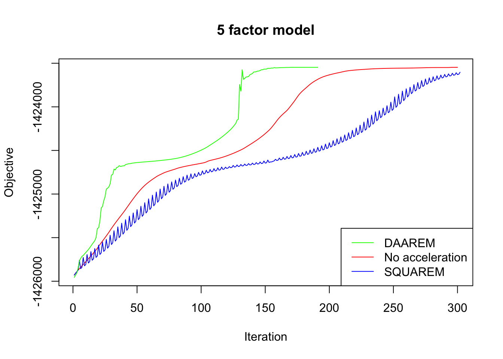
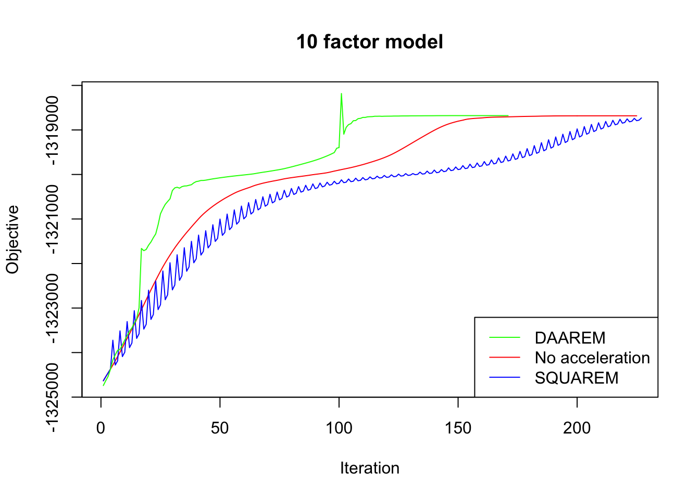
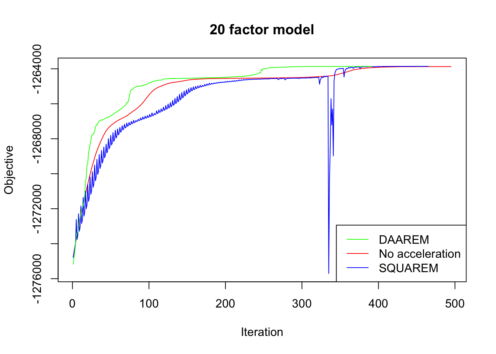

Last updated: 2018-08-17
workflowr checks: (Click a bullet for more information) ✔ R Markdown file: up-to-date
Great! Since the R Markdown file has been committed to the Git repository, you know the exact version of the code that produced these results.
✔ Environment: empty
Great job! The global environment was empty. Objects defined in the global environment can affect the analysis in your R Markdown file in unknown ways. For reproduciblity it’s best to always run the code in an empty environment.
✔ Seed:
set.seed(20180714)
The command set.seed(20180714) was run prior to running the code in the R Markdown file. Setting a seed ensures that any results that rely on randomness, e.g. subsampling or permutations, are reproducible.
✔ Session information: recorded
Great job! Recording the operating system, R version, and package versions is critical for reproducibility.
✔ Repository version: 76185c6
wflow_publish or wflow_git_commit). workflowr only checks the R Markdown file, but you know if there are other scripts or data files that it depends on. Below is the status of the Git repository when the results were generated:
Ignored files:
Ignored: .DS_Store
Ignored: .Rhistory
Ignored: .Rproj.user/
Ignored: docs/.DS_Store
Ignored: docs/figure/.DS_Store
Untracked files:
Untracked: data/greedy19.rds
Unstaged changes:
Modified: analysis/index.Rmd
This analysis is complementary to my investigations into parallelization (see here and here) in that I further explore ways to speed up FLASH backfits.
I use two off-the-shelf EM (and MM) accelerators, SQUAREM and DAAREM. For SQUAREM details, see Varadhan and Roland (2008). For DAAREM, see Henderson and Varadhan (2018).
I use the same GTEx dataset that I use here and in Investigation 8.
I use flash_add_greedy to create three flash fit objects with, respectively, 5, 10, and 20 factor/loading pairs. I then refine each fit using flash_backfit with: 1. no acceleration; 2. acceleration via SQUAREM; and 3. acceleration via DAAREM.
Since the experiments take a long time to run, I pre-run the code below and load the results from file.
res5 <- readRDS("./data/squarem/res5.rds")
res10 <- readRDS("./data/squarem/res10.rds")
res20 <- readRDS("./data/squarem/res20.rds")In every case, DAAREM takes the fewest iterations to converge and convergence is nearly monotonic. In constrast, SQUAREM evinces highly non-monotonic behavior and tends to take more iterations than backfitting with no acceleration at all.
plot_obj <- function(res, main) {
data <- c(res$backfit_obj, res$squarem_obj$V1, res$daarem_obj)
plot(1:length(res$backfit_obj), res$backfit_obj,
type='l', col='red', ylim=c(min(data), max(data)),
xlab="Iteration", ylab="Objective", main=main)
lines(1:length(res$squarem_obj$V1), res$squarem_obj$V1,
col='blue')
lines(1:length(res$daarem_obj), res$daarem_obj,
col='green')
legend("bottomright", legend=c("DAAREM", "No acceleration", "SQUAREM"),
lty=1, col=c('green', 'red', 'blue'))
}
plot_obj(res5, "5 factor model")
| Version | Author | Date |
|---|---|---|
| 022af3c | Jason Willwerscheid | 2018-08-17 |
plot_obj(res10, "10 factor model")
| Version | Author | Date |
|---|---|---|
| 022af3c | Jason Willwerscheid | 2018-08-17 |
plot_obj(res20, "20 factor model")
| Version | Author | Date |
|---|---|---|
| 022af3c | Jason Willwerscheid | 2018-08-17 |
Since the final objectives attained are difficult to see in the plots above, I list the differences in the table below. In every case, DAAREM beats the final objective attained with no acceleration. SQUAREM does much worse on the 5- and 10-factor models, but better on the 20-factor model.
final_obj <- function(res) {
backfit = res$backfit_obj[length(res$backfit_obj)]
return(c(res$daarem_obj[length(res$daarem_obj)] - backfit,
res$squarem_obj$V1[length(res$squarem_obj$V1)] - backfit))
}
table_data <- cbind("5_factors" = final_obj(res5),
"10_factors" = final_obj(res10),
"20_factors" = final_obj(res20))
rownames(table_data) = c("DAAREM (diff from backfit)",
"SQUAREM (diff from backfit)")
knitr::kable(table_data, digits=1)| 5_factors | 10_factors | 20_factors | |
|---|---|---|---|
| DAAREM (diff from backfit) | 0.1 | 3.8 | 9.1 |
| SQUAREM (diff from backfit) | -56.5 | -48.4 | 12.4 |
The acceleration methods add a bit of overhead in terms of time required per iteration, but not much. The following are seconds required per iteration:
times <- function(res) {
return(c(res$backfit_t[3] / length(res$backfit_obj),
res$daarem_t[3] / length(res$daarem_obj),
res$squarem_t[3] / length(res$squarem_obj$V1)))
}
table_data <- cbind("5_factors" = times(res5),
"10_factors" = times(res10),
"20_factors" = times(res20))
rownames(table_data) <- c("backfit", "DAAREM", "SQUAREM")
knitr::kable(table_data, digits = 2)| 5_factors | 10_factors | 20_factors | |
|---|---|---|---|
| backfit | 1.35 | 2.50 | 5.57 |
| DAAREM | 1.37 | 2.71 | 5.53 |
| SQUAREM | 1.47 | 2.79 | 5.60 |
Perhaps the most important consideration is how quickly we can obtain an estimate that is reasonable close to convergence, where “reasonably close” is defined by some stopping rule. Below I give the number of iterations required given different tolerance parameters (i.e., the number of iterations required before the difference in objective from one iteration to the next is less than tol). (I omit results for SQUAREM since it does so poorly in other respects.)
niter <- function(res, tols) {
backfit_diff <- (res$backfit_obj[2:length(res$backfit_obj)] -
res$backfit_obj[1:(length(res$backfit_obj) - 1)])
daarem_diff <- (res$daarem_obj[2:length(res$daarem_obj)] -
res$daarem_obj[1:(length(res$daarem_obj) - 1)])
res <- matrix(NA, nrow = length(tols), ncol = 2)
for (i in 1:length(tols)) {
res[i, 1] <- min(which(backfit_diff < tols[i])) + 1
res[i, 2] <- min(which(abs(daarem_diff) < tols[i])) + 1
}
rownames(res) = paste("tol =", as.character(tols))
colnames(res) = c("backfit", "DAAREM")
return(t(res))
}
table_data <- niter(res5, c(0.5, 0.1, 0.05))
knitr::kable(table_data, caption = "5 factors")| tol = 0.5 | tol = 0.1 | tol = 0.05 | |
|---|---|---|---|
| backfit | 240 | 283 | 286 |
| DAAREM | 142 | 142 | 174 |
table_data <- niter(res10, c(0.5, 0.1, 0.05))
knitr::kable(table_data, caption = "10 factors")| tol = 0.5 | tol = 0.1 | tol = 0.05 | |
|---|---|---|---|
| backfit | 192 | 201 | 208 |
| DAAREM | 111 | 116 | 116 |
table_data <- niter(res20, c(0.5, 0.1, 0.05))
knitr::kable(table_data, caption = "20 factors")| tol = 0.5 | tol = 0.1 | tol = 0.05 | |
|---|---|---|---|
| backfit | 183 | 452 | 483 |
| DAAREM | 127 | 129 | 129 |
Click “Code” to view the code used to produce the above results.
# Load packages ---------------------------------------------------------
# devtools::install_github("stephenslab/flashr")
devtools::load_all("/Users/willwerscheid/GitHub/flashr/")
# devtools::install_github("stephenslab/ebnm")
devtools::load_all("/Users/willwerscheid/GitHub/ebnm/")
library(SQUAREM)
library(daarem)
# Load data -------------------------------------------------------------
gtex <- readRDS(gzcon(url("https://github.com/stephenslab/gtexresults/blob/master/data/MatrixEQTLSumStats.Portable.Z.rds?raw=TRUE")))
data <- flash_set_data(t(gtex$strong.z), S = 1)
# Create flash objects for backfitting ----------------------------------
fl_g5 <- flash_add_greedy(data, Kmax = 5,
var_type = "zero", init_fn = "udv_svd")
fl_g10 <- flash_add_greedy(data, Kmax = 5, f_init = fl_g5,
var_type = "zero", init_fn = "udv_svd")
fl_g20 <- flash_add_greedy(data, Kmax = 10, f_init = fl_g10,
var_type = "zero", init_fn = "udv_svd")
# Testing functions -----------------------------------------------------
logit <- function(x) {log(x / (1 - x))}
inv_logit <- function(x) {exp(x) / (1 + exp(x))}
fl.to.param <- function(f) {
c(as.vector(f$EL), as.vector(f$EF),
as.vector(f$EL2), as.vector(f$EF2),
sapply(f$gl, function(k) {logit(k$pi0)}),
sapply(f$gf, function(k) {logit(k$pi0)}),
sapply(f$gl, function(k) {log(k$a)}),
sapply(f$gf, function(k) {log(k$a)}))
}
param.to.fl <- function(param, m, n, k) {
LL = matrix(param[1:(m*k)], ncol=k)
curr_idx = m*k
FF = matrix(param[(curr_idx + 1):(curr_idx + n*k)], ncol=k)
curr_idx = curr_idx + n*k
f = flashr:::flash_init_lf(LL, FF)
f$EL2 = matrix(param[(curr_idx + 1):(curr_idx + m*k)], ncol=k)
curr_idx = curr_idx + m*k
f$EF2 = matrix(param[(curr_idx + 1):(curr_idx + n*k)], ncol=k)
curr_idx = curr_idx + n*k
f$gl = list()
f$gf = list()
for (i in 1:k) {
f$gl[[i]] = list()
f$gl[[i]]$pi0 = inv_logit(param[curr_idx + 1])
curr_idx = curr_idx + 1
}
for (i in 1:k) {
f$gf[[i]] = list()
f$gf[[i]]$pi0 = inv_logit(param[curr_idx + 1])
curr_idx = curr_idx + 1
}
for (i in 1:k) {
f$gl[[i]]$a = exp(param[curr_idx + 1])
curr_idx = curr_idx + 1
}
for (i in 1:k) {
f$gf[[i]]$a = exp(param[curr_idx + 1])
curr_idx = curr_idx + 1
}
return(f)
}
flash.iter <- function(p, data, m, n, k) {
init_fl = param.to.fl(p, m, n, k)
fl = flash_backfit(data, init_fl,
ebnm_fn = "ebnm_pn", var_type = "zero",
nullcheck = FALSE, verbose = FALSE,
maxiter = 1)
obj = flash_get_objective(data, fl)
message(obj)
return(c(fl.to.param(fl), obj))
}
flash.obj <- function(p, data, m, n, k) {
return(p[length(p)])
}
run_test <- function(f_init, data, niter) {
m <- flash_get_n(f_init)
n <- flash_get_p(f_init)
k <- flash_get_k(f_init)
backfit_obj <- rep(NA, niter)
f <- f_init
backfit_t <- system.time({
for (i in 1:niter) {
f <- flash_backfit(data, f,
ebnm_fn = "ebnm_pn", var_type = "zero",
nullcheck = FALSE, verbose = FALSE,
maxiter = 1)
obj <- flash_get_objective(data, f)
message(obj)
backfit_obj[i] <- obj
}
})
message("Sinking SQUAREM results to file...")
zz <- file("tmp.txt", open="wt")
sink(zz, type="message")
squarem_t <- system.time(
squarem_res <- squarem(c(fl.to.param(f_init),
flash_get_objective(data, f_init)),
flash.iter, flash.obj,
data = data, m = m, n = n, k = k,
control = (list(tol=1, maxiter=niter)))
)
sink(type="message")
squarem_obj <- read.csv("tmp.txt", header = FALSE, sep = '\n')
file.remove("tmp.txt")
daarem_t <- system.time(
daarem_res <- daarem(c(fl.to.param(f_init),
flash_get_objective(data, f_init)),
flash.iter, flash.obj,
data = data, m = m, n = n, k = k,
control = (list(tol=1, maxiter=niter)))
)
return(list(backfit_obj = backfit_obj, backfit_t = backfit_t,
squarem_obj = squarem_obj, squarem_t = squarem_t,
daarem_obj = daarem_res$objfn.track, daarem_t = daarem_t))
}
# Run tests -------------------------------------------------------------
fpath <- "./data/squarem/"
# Normal backfit of fl_g5 takes 304 iterations.
res_5 <- run_test(fl_g5, data, niter = 300)
saveRDS(res_5, paste0(fpath, "res5.rds"))
# Normal backfit of fl_g10 takes 228 iterations.
res_10 <- run_test(fl_g10, data, niter = 225)
saveRDS(res_10, paste0(fpath, "res10.rds"))
# Normal backfit of fl_g20 takes 497 iterations.
res_20 <- run_test(fl_g20, data, niter = 495)
saveRDS(res_20, paste0(fpath, "res20.rds"))
# Use this function if gf and gl parameters aren't converted to a
# log/logit scale.
#
# flash.iter <- function(p) {
# init_fl = param.to.fl(p[1:(length(p) - 1)])
# fl = try(flash_backfit(data, init_fl, ebnm_fn="ebnm_pn",
# ebnm_param=list(warmstart=TRUE),
# var_type="zero", nullcheck=F, maxiter=1))
# if (class(fl) == "try-error") {
# fl = flash_backfit(data, init_fl, ebnm_fn="ebnm_pn",
# ebnm_param=list(warmstart=FALSE),
# var_type="zero", nullcheck=F, maxiter=1)
# }
# return(c(f.to.param(fl), flash_get_objective(data, fl)))
# }
plot_obj <- function(res) {
data <- c(res$backfit_obj, res$squarem_obj$V1, res$daarem_obj)
plot(1:length(res$backfit_obj), res$backfit_obj,
type='l', col='red', ylim=c(min(data), max(data)),
xlab="Iteration", ylab="Objective")
lines(1:length(res$squarem_obj$V1), res$squarem_obj$V1,
col='blue')
lines(1:length(res$daarem_obj), res$daarem_obj,
col='green')
}
plot_obj_zoom <- function(res, yrange) {
data <- c(res$backfit_obj, res$squarem_obj$V1, res$daarem_obj)
max_obj <- max(data)
t <- max_obj - yrange
begin_iter <- min(c(which(res$backfit_obj > t),
which(res$squarem_obj > t),
which(res$daarem_obj > t)))
plot(1:length(res$backfit_obj), res$backfit_obj,
type='l', col='red',
xlim=c(begin_iter, length(res$backfit_obj)),
ylim=c(t, max_obj),
xlab="Iteration", ylab="Objective")
lines(1:length(res$squarem_obj$V1), res$squarem_obj$V1,
col='blue')
lines(1:length(res$daarem_obj), res$daarem_obj,
col='green')
}sessionInfo()R version 3.4.3 (2017-11-30)
Platform: x86_64-apple-darwin15.6.0 (64-bit)
Running under: macOS High Sierra 10.13.6
Matrix products: default
BLAS: /Library/Frameworks/R.framework/Versions/3.4/Resources/lib/libRblas.0.dylib
LAPACK: /Library/Frameworks/R.framework/Versions/3.4/Resources/lib/libRlapack.dylib
locale:
[1] en_US.UTF-8/en_US.UTF-8/en_US.UTF-8/C/en_US.UTF-8/en_US.UTF-8
attached base packages:
[1] stats graphics grDevices utils datasets methods base
loaded via a namespace (and not attached):
[1] workflowr_1.0.1 Rcpp_0.12.17 digest_0.6.15
[4] rprojroot_1.3-2 R.methodsS3_1.7.1 backports_1.1.2
[7] git2r_0.21.0 magrittr_1.5 evaluate_0.10.1
[10] highr_0.6 stringi_1.1.6 whisker_0.3-2
[13] R.oo_1.21.0 R.utils_2.6.0 rmarkdown_1.8
[16] tools_3.4.3 stringr_1.3.0 yaml_2.1.17
[19] compiler_3.4.3 htmltools_0.3.6 knitr_1.20 This reproducible R Markdown analysis was created with workflowr 1.0.1